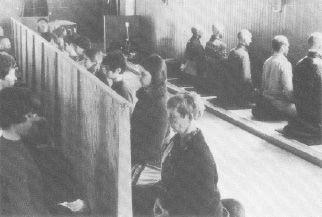

MEDITATION

The term meditation is used in such a variety of ways that it may mean anything from daydreaming or musing, to deliberating about a topic, to a specific discipline of working with the mind that can be so exact that every act of body and thought is prescribed. The way in which the term meditation is used in yoga is in the more formal and disciplined sense. As such it is distinguished from reflection or contemplation. It includes two processes: making the mind concentrated or one-pointed, and bringing to total cessation the turning of the mind.
Vivekananda says:
“The human mind is like that monkey, incessantly active by its own nature, then it becomes drunk with the wine of desire, thus increasing its turbulence. After desire takes possession comes the sting of the scorpion of jealousy at the success of others, and last of all the demon of pride enters the mind, making it think itself of all importance.”
As long as the mind is caught in the senses and you are caught in your mind, you remain in the illusion . . . since in the last analysis, your thoughts create your universe. Only when your mind has become completely calm will you reach Buddhahood or enlightenment.
“The soul has the means. Thinking is the means. It is inanimate. When thinking has completed its task of release, it has done what it had to do, and ceases.”—Vishnu Parana
Exercises
1. The simplest instructions for meditation are given by Tilopa in the Song of Mahamudra:
“Do nought with the body but relax
Shut firm the mouth and silent remain
Empty your mind and think of nought
Like a hollow bamboo
Rest at ease your body
Giving not nor taking
Put your mind at rest
The great way is a mind that clings to nought
Thus practicing, in time you will reach Buddhahood.”
2. The southern Buddhists (Therevadin) practice a form of meditation called Satipatthana Vipassana (Application of Mindfulness). It starts with the simple exercise of Bare Attention. All that you do is register thoughts, states, etc. in the present. This process slows down the transition from the receptive to the active phase of the cognitive process. You don’t think about your thoughts. You merely note them. This produces “peaceful penetration.” You transcend conceptual thought.
Instructions:
(a) Find a quiet and peaceful place where you will not be disturbed. If you wish to purify the spot first before you meditate in it, stir a glass of water with the fourth finger of your right hand while repeating the following mantra three times:
OM APWITRAH PAVITRORWA
SARVA WASTANG GATOPIWA
YEH SMARET PUNDARI
KAKSHAM SABAHYA
BHUANTARAH SUCHIH
Then sprinkle the water around the spot you plan to sit in (moving in a clockwise fashion). This mantra is used by jungle sadhus in India to purify the ground.
(b) Get into a comfortable seat. It should be a position you can remain in for at least thirty minutes without moving or discomfort. It is desirable that the head, neck and chest be in a straight line.
(c) At first let your mind wander and just watch it. Just note how your mind works. Don’t think about the thoughts. Just note them. Do this for about thirty minutes a day for a week.
(d) Then find a muscle in your abdomen, just below your rib cage, which moves when you breathe such that it (the muscle) rises and falls. Attend to it. Every time the muscle rises, think “Rising,” and every time it falls, think “Falling” . . . rising . . . falling . . . rising . . . falling. Let all other thoughts drift by and keep your attention focused on this muscle. Don’t lose heart. At first the mind will wander frequently. Each time it does, follow it immediately upon becoming conscious of its wandering. Note where it wandered to, and then immediately return to rising . . . falling . . . rising . . . falling. . .
Or if you prefer, you can substitute counting for rising and falling. Om (in-breath) . . . 1 (out-breath), Om . . . 2 . . . Om . . . 3 . . . etc. Two or more syllable numbers can be divided into in and out breath, e.g., four . . . teen . . . etc. If you wish, you can set goals for yourself during the initial stages. Start with 250 and increase by 50 each day. Remember . . . your only task is to count that muscle going up and down. All other thoughts don’t belong here. Don’t try to suppress them (for that is just another thought). Rather, note the intruding thought, give it a label, and return to the task at hand. After about a month you will note a great calm and sense of peace from this exercise.
(e) After you get in the habit of merely noting each stimuli in the Here and Now without thinking about it, then add additional steps designed to further free you from illusion. Specifically, you add Clear Comprehension. This advanced practice involves describing the noted thought or state in terms of its purpose, its suitability, the way in which it relates to spiritual practice, and finally in terms of its total impersonality. These descriptions (which are described in detail in a number of books on Buddhist meditation) are ritualistic in nature and help you to see the impermanence of thought, the way in which it perpetuates suffering, and the fact that it does not in any way imply the presence of an ego or “I” who thinks it.
Great gains in meditative practice may be made without these advanced stages. The simple technique of bare attention is very powerful. With the advanced techniques available in the Buddhist texts you develop in time a totally dispassionate view of the thoughts which fill your consciousness.
3. Tratak
Set a candle at a distance of about twenty inches in front of you. The height of the flame should be at a level with a point between your eyebrows when you are sitting up straight. Sit comfortably, but with head, neck and chest in a straight line.
If you are able to do so, close your muhlbandh. That is, pull up at a point halfway between your genitals and your anus. This closes the sphincters and pulls energy up towards the upper part of the body. Don’t strain to do this. With practice it comes naturally.
Starting with five minutes and increasing by about five minutes a day up to one hour . . . just sit with the candle.
Don’t try to do anything. Just hang out with the candle flame. Let any thoughts that enter your mind pass by like clouds in the sky. See all thoughts and sensations as tiny insects hovering around the flame. Don’t try to make the flame change or to focus or to see . . . just BE with the flame. If your eyes water it is all right. If your eyes hurt, then stop.
After a period of time there will be just you and the candle flame. . .
Note: You may do Japa (mantra on name of God) simultaneously if you wish.
4. Nad Yoga
This is a yoga of attending to the inner sounds. It is extremely effective and powerful.
Find a comfortable position where your head, neck and chest are in a straight line. You may lie down if reclining doesn’t lead to sleep. You may wish to use earplugs if there is much erratic external noise. They are not necessary, especially if you can find a quiet place or time of night in which to do this exercise. Keep your eyes and mouth closed.
Now tune in on any inner sound in your head that you can find. Narrow in on that sound until it is the dominant sound you are attending to. Let all other sounds and thoughts pass by.
As you allow that sound to more and more fill your consciousness, you will ultimately merge with that sound so that you do not hear it any longer. At that point you will start to hear another sound. Now tune in on the new sound and repeat the process. There are seven or ten sounds (depending upon the number of discriminations you make).
The seven are described by Madame Blavatsky as follows:
“The first is like the nightingale’s sweet voice, chanting a parting song to its mate. The next resembles the sound of silver cymbals of the Dhyanis, awakening the twinkling stars. It is followed by the plain melodies of the ocean’s spirit imprisoned in a conch shell, which in turn gives place to the chant of Vina. The melodious flute-like symphony is then heard. It changes into a trumpet blast, vibrating like the dull rumbling of a thunder cloud. The seventh swallows all other sounds. They die and then are heard no more.”
Other descriptions include: the buzzing of bees, the sounds of crowds in a large gathering place such as a railway station, drums, etc. You need not initially concern yourself with the order, for until the final stages there are some individual differences.
You can think of these sounds as the vibrations of various nerves. Or you can think of these various nerves as tiny receivers for various planes of vibration. Later in your work you will find that each of the sounds is associated with specific visual and kinesthetic experiences . . . each is a specific astral plane.
This is a technique of climbing the ladder of sound.
Notes: Some of these sounds, such as that of the flutes, are very attractive and may trap you in bliss. After a few days of such enjoyment it is well to get on with it.
Following the highest sound, you may have a fever for twenty-four hours. This will only occur when you arrive at a very high level of purification.
In meditation, perseverence furthers.
“At first a yogi feels his mind
Is tumbling like a waterfall,
In mid course like the Ganges
It flows on slow and gentle,
In the end it is a great vast ocean
Where the lights of Son and Mother merge in One.”—Tilopa
Potent Quotes
“Right mindfulness snatches the pearl of Freedom from the Dragon Time.”—Heart of Buddhist Meditation
“We are not trying to check the thought-waves by smashing the organs which record them. We have to do something much more difficult—to unlearn the false identification of the thought-waves with the ego-sense. This process of unlearning involves a complete transformation of character, a ‘renewal of the mind’ as St. Paul put it.”—Isherwood
“A system of meditation which will produce the power of concentrating the mind on anything whatsoever is indispensable.”—Tibetan Yoga and Secret Doctrine
“There are no impediments to meditation. The very thought of such obstacles is the greatest impediment.”—Ramana Maharshi